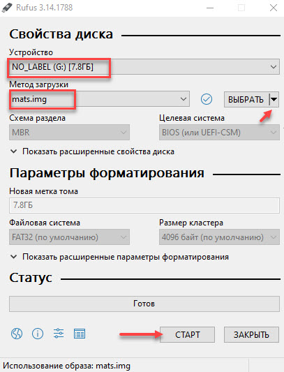
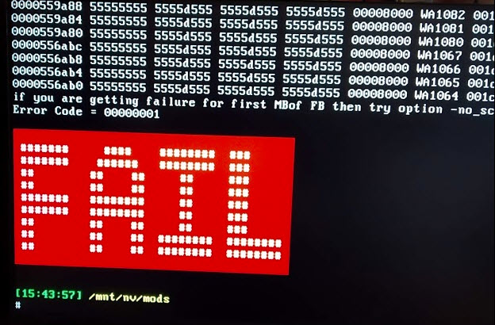
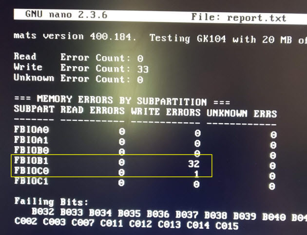
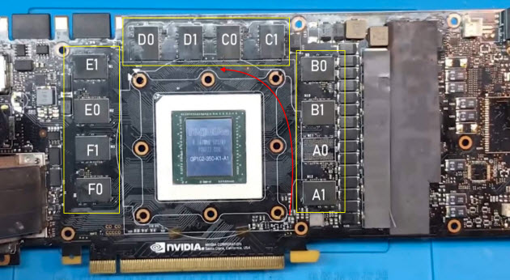
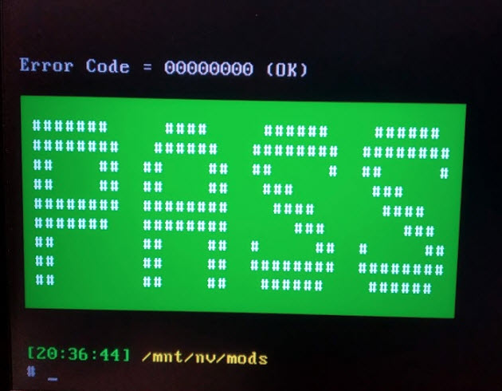
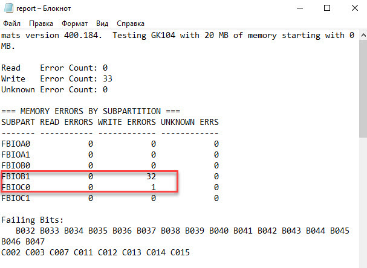

Mats руководство
Создание загрузочной флэшки Mats
Скачиваем и распаковываем архив – mods mats400.184.
Распаковываем архив и запускаем Rufus. Вставляем флешку, выбираем файл mats.img из распакованного архива. Нажимаем Старт.
Чтобы mats поддерживал видеокарты 10 серии, нужно из папки — версия 404.184 копировать с заменой файлы mats и mods в загрузочную флешку в папку 367.38.1
Тест памяти, когда есть изображение
Сперва проведем диагностику:
- Вставляем загрузочную флешку в ПК.
- В биосе делаем приоритет загрузки с usb флешки.
- Загружается MATS и на автомате начинается тестирование видеокарты.
- После окончания теста покажет результат. FAIL — значит есть ошибки или PASS — ошибок нет.
- Если есть ошибки, вводим команду — nano report.txt и смотрим на каком канале ошибки.
- Определяем битую банку видеопамяти.
Чтобы посмотреть результат тестирования, вводим команду: nano report.txt
Если вышла такая картинка, значит есть поврежденный чип.
В mats версии 400.184 результат тестирования выглядит таким образом.
Начинаем считать против часовой стрелки от правого нижнего угла: [A1, A0] [B1, B0] [C1, C0] [D1,D0] [E1,E0] [F1,F0]. Таким образом определяем проблемный чип видеопамяти.
Проверка видеокарты с помощью mats команд
Иногда бывают и глюки в автоматическом тесте, поэтому лучше еще раз проверить вручную через специальные команды.
По умолчанию в автоматическом режиме mats тестирует 20 мб видеопамяти, чего обычно хватает для обнаружения проблемы.
В ручном режиме нужно прогнать больше видеопамяти 30-100 мб, для этого вводим следующие mats mods команды:
- cd 367.38.1/ — для входа в папку 367.38.1
- ./mats -e 30 > test.txt — запуск проверки памяти 30 мб с последующей записью в текстовый файл test.txt
- nano test.txt — открываем результат ручного тестирования после проверки.
Дополнительные команды:
- Ctrl+X — выход назад для ввода другой команды.
- ./mats -c 100 — где цифра указывает проценты проверки видеопамяти.
- ls — вывод всех файлов в каталоге.
В случае если тест видеокарты пройдет без ошибок, то выйдет такая картинка с зеленой надписью PASS.
Вводим команду: nano test.txt
Убеждаемся, что в файле test.txt, где записан результат тестирования — ошибок нет.
Диагностика без изображения
Mats может выводить результат, если нет изображения, но для этого понадобится рабочий компьютер.
- Вставляем флэшку в компьютер с неисправной видеокартой.
- Отключаем все диски, чтобы загрузка началась с флэшки.
- Запускаем и ждем минут 5.
- Выключаем компьютер и подключаем флэшку к исправному компьютеру.
- В папке mods открываем файл report.txt.
Смотрим есть ли неисправности и на каком канале памяти.
Если ошибок нет, то в результате должно быть слово pass, как было описано выше.
О ремонте можно узнать в соответствующем разделе.